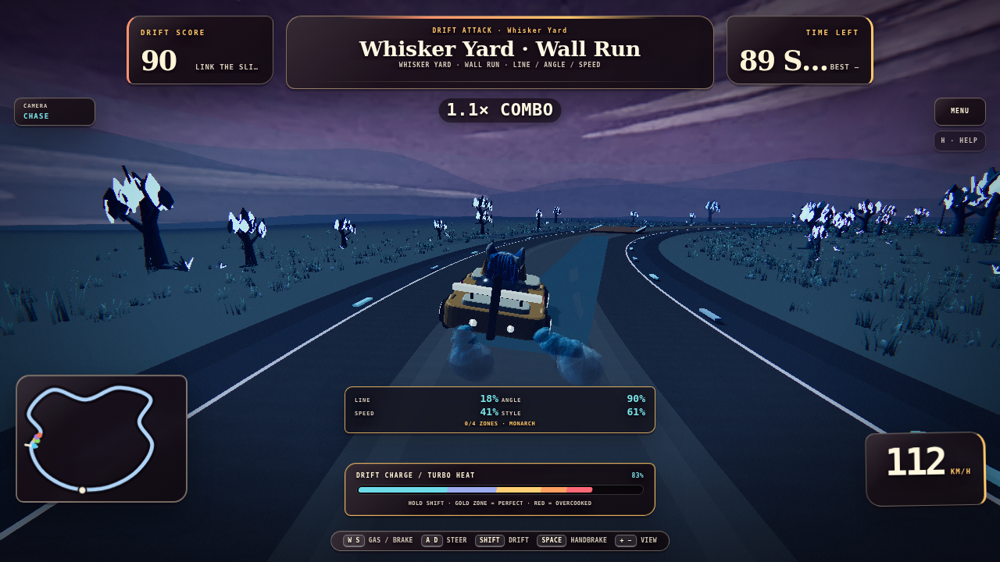
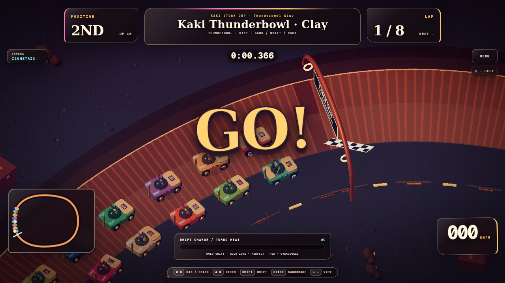
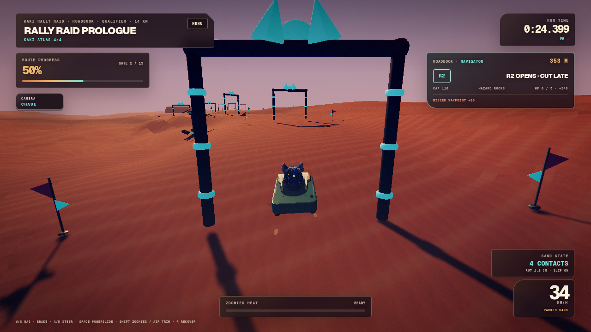
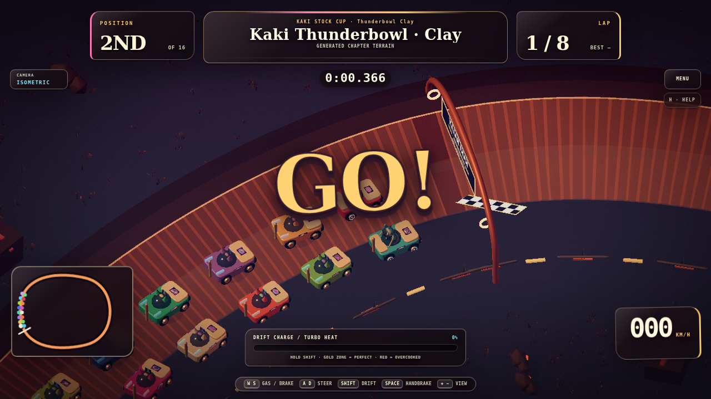
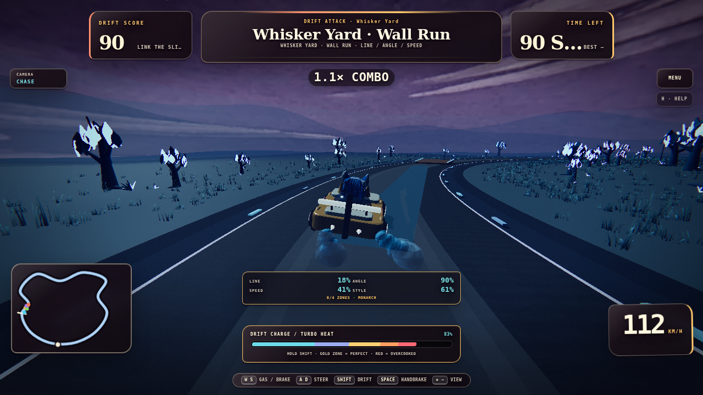
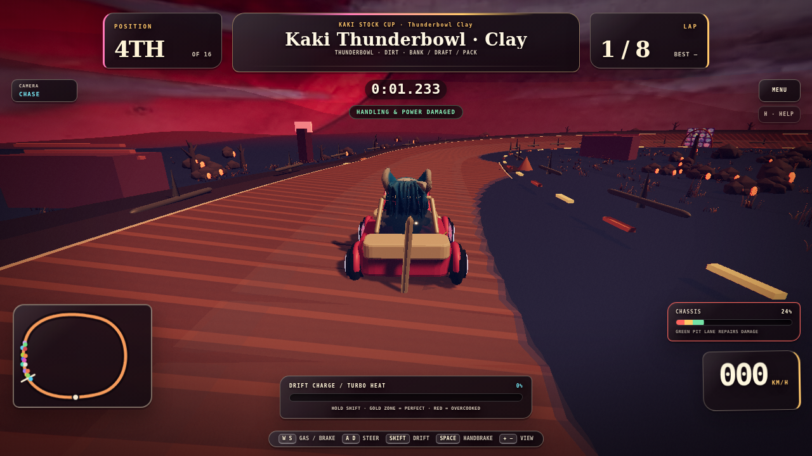
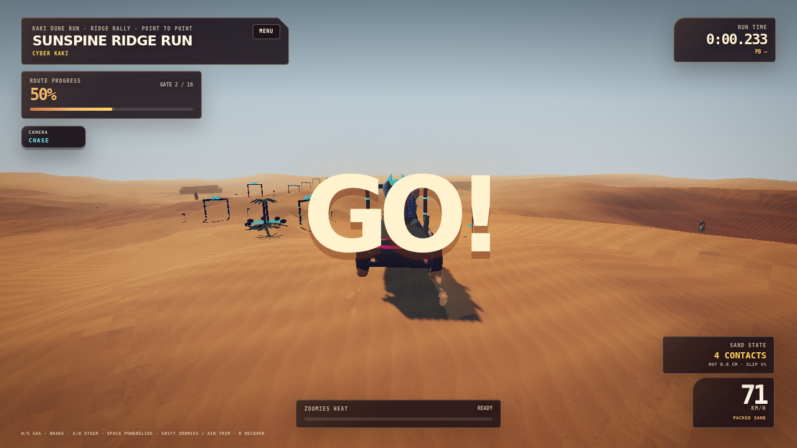
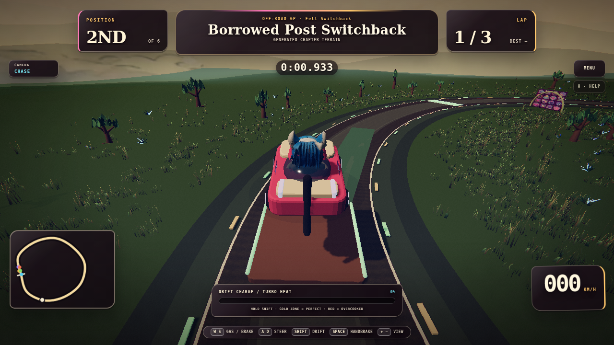

Drift Attack 2.0
Three measured cars, three Whisker Yard layouts, physical lateral slip, and judged line/angle/speed/style feedback in the existing session.
Bar: Formula Drift line/angle/style + drift onboard readabilityA candid implementation log for the Kaki Rally expansion. This page is intentionally outside the production graph: it records the running artifact, the evidence that supports it, and the sharpest remaining gap.
Three measured cars, three Whisker Yard layouts, physical lateral slip, and judged line/angle/speed/style feedback in the existing session.
Bar: Formula Drift line/angle/style + drift onboard readabilityConcrete and clay variants share the oval contract while changing bank, grip, drag, groove, AI grid, and presentation. Live 16-car pack proof captured.
Bar: Bristol banking/pack behavior + dirt short-track attitudeFour authored stages, three vehicle archetypes, roadbook assists, waypoint/speed penalties, service choice, and cumulative expedition state on Dune terrain.
Bar: Dakar roadbook/navigation + rally-raid onboard movement







Wave 1 clears its functional bar: Drift now communicates why a run scores, Thunderbowl banking reaches contact and telemetry, and Rally Raid is playable through a live roadbook/penalty/service loop. The final combined browser matrix also passes both renderer paths. The largest remaining gap is authored spectacle and human feel: the new venue dressing and procedural Raid bodies are credible but still lighter than a finished commercial showcase, and SwiftShader cannot answer native performance or controller feel.Evidence reviewed: final WebGL/WebGPU matrix, focused browser pixels, direct Raid finish state, deterministic smoke, visual/lifecycle suites, and source/contract inspection. This is a verified implementation wave, not a claim of final AAA parity.
{kind=link}
{kind=link}
{kind=link}
{kind=link}